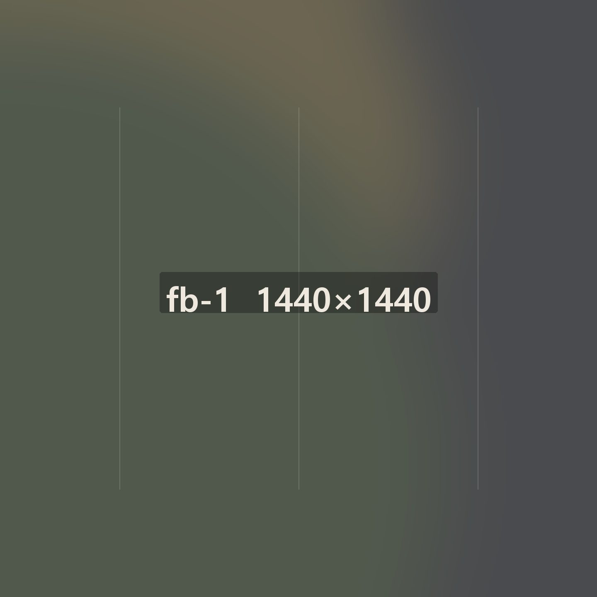
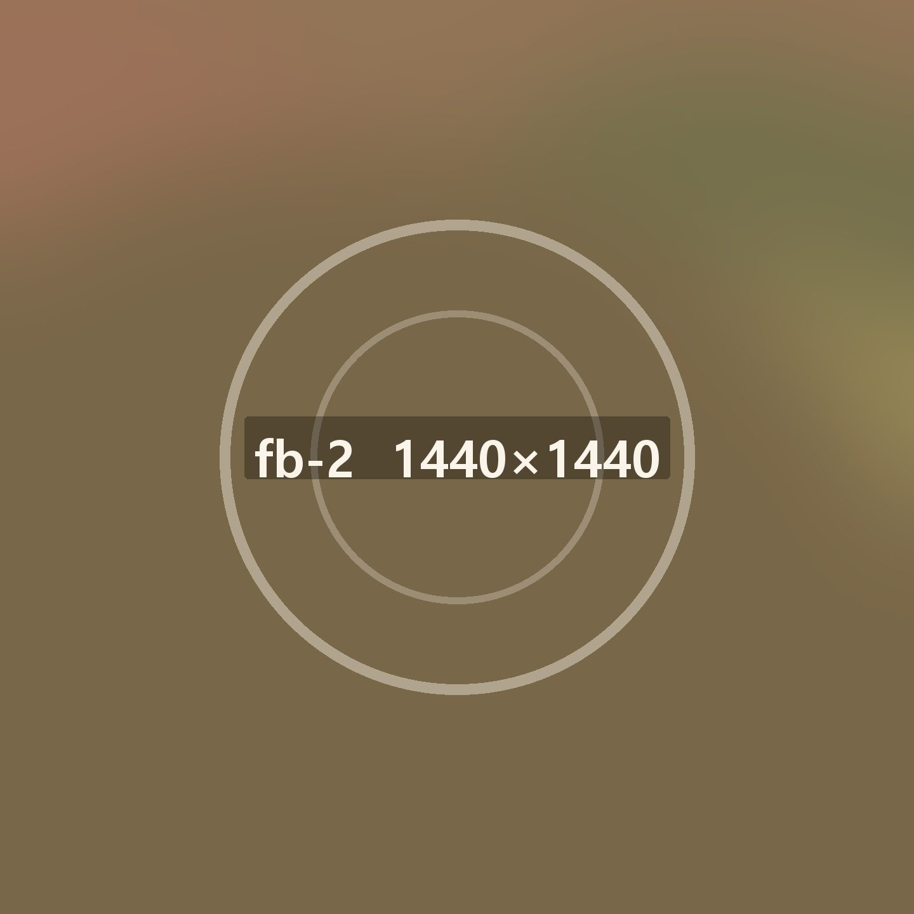
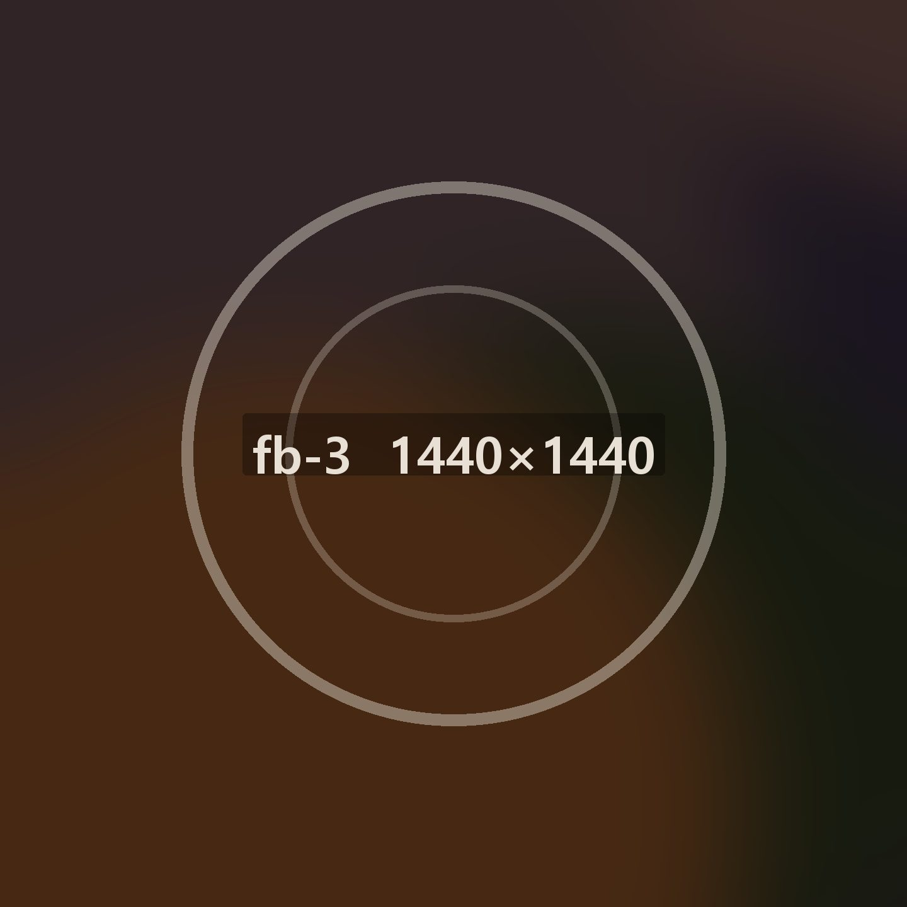
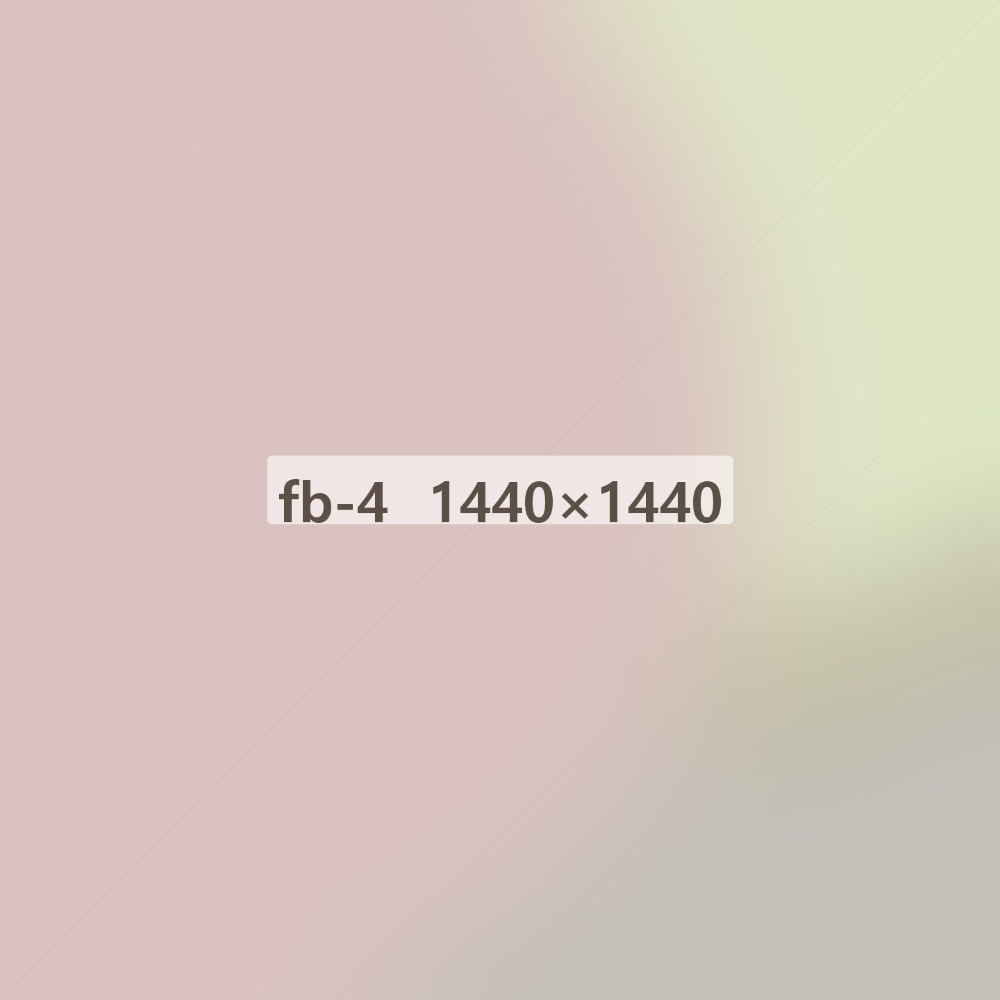
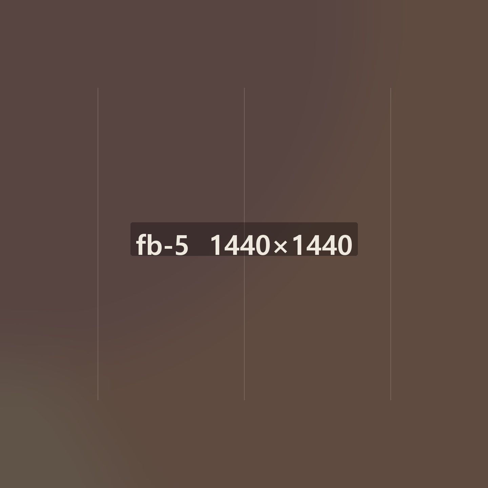

- 01창업 상담 신청전화 또는 온라인
- 02상담 · 브랜드 선택희망 지역·예산
- 03상권 조사유동·경쟁 매장 확인
- 04점포 계약임대 조건 검토
- 05가맹 계약계약서 설명 후 체결
- 06설계 · 인테리어평형별 표준 도면
- 07가맹점 교육본사 2주 · 매장 1주
- 08기기 · 집기 입고주방 설비 설치
- 09오픈 준비시식·시연 점검
- 10매장 오픈개설 담당자 상주
선배 사장님
이야기
“죽은 재료가 남지 않습니다.
그게 스무 해를 버틴 이유였어요.”
온죽 신촌점 · 2003년 개점 · 김선호 사장님
걱정마세요 사장님!
혼자 하는 장사가 아닙니다

2003년 온죽 신촌점을
연 사장님이 지금도 그 자리에 있습니다
누적 가맹 매출 4,180억스무 해 동안 문을 연 매장이 2,140곳입니다. 그중 열 해 넘게 운영 중인 매장이 절반을 넘습니다.

전국 1,860명의 사장님이
같은 기준으로 장사합니다
5년 연속 폐점률 1%레시피와 원가표, 주방 동선까지 본사가 정한 기준을 씁니다. 기준이 같으니 어느 매장에서 먹어도 맛이 같습니다.

전국 여섯 곳 물류센터에서
새벽에 출발합니다
주 6회 정기 배송주문 마감은 오후 3시입니다. 다음 날 아침 문 열기 전에 매장 앞에 내려 둡니다.

브랜드마다 다른
3주짜리 교육 과정이 있습니다
본사 2주 · 매장 1주죽을 쑤는 법과 밥을 짓는 법이 다릅니다. 브랜드별로 과정을 따로 두고, 오픈 뒤 한 달은 담당자가 매장에 나옵니다.

온담과 함께
스무 해를 지나왔습니다
가맹점 재계약률 94%계약이 끝나면 다시 계약할지 사장님이 고릅니다. 열에 아홉이 다시 씁니다.
사장님을 위해 일하는
사람들이 있습니다
인터뷰
상권개발팀 · 12년차“하루에 두세 곳씩 봅니다. 가겠다고 결정하기 전에 같은 건물 1층 가게가 몇 번 바뀌었는지부터 봅니다.”
점포 조사 · 임대 조건 검토인터뷰
슈퍼바이저 · 8년차“오픈하고 한 달은 매일 나갑니다. 주방에서 같이 서 보면 동선에서 뭐가 걸리는지 바로 보입니다.”
매장 운영 · 위생 점검인터뷰
메뉴개발팀 · 15년차“신메뉴는 열 개 만들면 하나 나갑니다. 사장님 손이 한 번 덜 가는 쪽으로 고칩니다.”
레시피 · 원가 설계